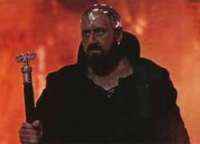

| Pages en cours de ré aménagement et prolongement des chroniques (05/07/09) |
Après l'Apocalypse, après que tous les systèmes furent détruits, que les brasiers des guerres civiles se furent éteints, que les anciens empire se furent dispersés, vint le temps de la reconstruction.
L'essentiel des chefs d'antan étaient morts. Certains peuples se réunifiaient sur leurs planètes et, ailleurs, au sein d'antiques vaisseaux que l'Apocalypse avaient surpris en plein voyage, à des années-lumières de chez eux, les équipages avaient remis en fonction de modestes propulseurs et se dirigeaient vers de nouvelles terres pour y rebâtir une civlisation.
Peu à peu, ces mondes réapprirent les techniques pré-apocalyptiques et, bientôt, commncèrent à communiquer, à s'étendre, à recoloniser. Et, bientôt, leurs ondes portèrent assez loin pour atteindre le secteur 0, où ils découvrirent que certains pouvoirs avaient survécu.
Sommaire
Le règne de Katradhan (Septembre à Octobre 307 ETU)
Premiers contacts (24 au 26 septembre)

Les premières images qui parvinrent de l'Assemblée provint d'une certain Katradhan et était intitulé Eveil : Ordre, Discipline, Respect. Katradhan y arborrait le symbôle de l'Organisation Renégate sur son torse et se tenait devant plusieurs rangées de soldats avec, en fond, de nombreux généraux. L'ensemble de la scène était surmontée d'une immense plaque gravée sur laquelle on pouvait lire : "Ordre, Discipline, Respect". Peu nombreux furent ceux à capter en direct ce message mais il demeure comme le premier contact entre les nouveaux peuples et le pouvoir en place.
Il y invitait tous les commandants à se présenter à l'Assemblée en vue d'un recensement et interpellait le premier d'entre eux (Erladur) à prendre la parole alors qu'il s'était tu jusqu'à présent. Le ton était railleur et méprisant (accusant ls nouveaux venus de demeurer à un "âge de pierre technologique", se demendant si le silence observé était signe de prudence ou de lâcheté, etc).

Premières contestations
Par ailleurs, ce message avait été accompagné d'une annonce de la mise en place d'une taxe de 1% sur les échanges de la contrebande. Taxe qui, quelques heures plus tard, passa à 2% sour la menace de "risques terroristes", selon le Renouveau Renégat.
Sur ce point, le RR ne se trompait pas : dans les heures qui suivirent, deux tentatives d'invasion furent opérées sur les centres de contrebande. Pour autant, les taxes n'en suscitèrent pas moins plusieurs réactions hostiles et des voix s'élevèrent pour s'opposer, telle celle du commandant Aristippe qui adressa une rebuffade à son interlocuteur.
Katradhan décida de fixer d'emblée les règles du jeu et fit donc son apparition en personne pour rappeler à Artisippe qu'il détenait la capitale et l'Assemblée, ce qui lui permettait de bannir de ce lieu tout importun à ses yeux. Il exigea de fait des excuses sous forme d'un ultimatum avec menace de bannissement. Aristippe refusa de se soumettre mais rappela poliment et sur un ton moins vif qu'il avait su conserver les formes vis-à-vis du gouvernement en place. Son audace plut à Katradhan qui le pardonna.
Quoique la tension ait finalement été dissipée, il subsista comme un malaise, l'idée que ce règne serait placé sous le sceau d'un ordre strict et d'un certain mépris envers les nouveaux arrivants. Nous le verrons, cette vue de la situation était incomplète.
Mise en place du pouvoir (26 septembre au 10 octobre)
Nombreux furent les commandants à se présenter dans les jours à venir et ce fut l'occasion pour Katradhan de recruter ses premiers lieutenants grâce auxquels il asseoirait son emprise. En effet, Katradhan lui-même n'intervint jamais une seule fois, demeurant isolé dans le secteur 0 alors innaccessible. Jamais il n'en sortit, laissant ses mieutenants faire régner l'ordre.
Les lieutenants de Katradhan


Ce recrutement fut donc l'une de ses premières tâches et, a posteriori, on peut dire que nombre d'opportunistes en profitèrent. Certains furent sans doute sincères mais beaucoup n'y voyaient qu'un moyen de gagner un peu de pouvoir. On vit aussi de dessiner une opposition dans le même temps, quoique timide et sous la menace de bannissement de l'Assemblée.
Parmi les premières fidèles, on compta les commandants Merlin et Uther Pendragon. Le premier se fit le porte-parole et conseiller de Katradhan. Le second, son bras armé, et celui qui lui demeura fidèle jusqu'à la fin, quand tous les autres l'abandonneraient. Puis, on compte les commandants Aïlin, Rivain Laplace, La lignée de L'Eld, Gregorio Greco, Le V Rajas et Pioupiou. Ceux-ci furent donc nommés comme représentants du RR et récompensés par la garde d'un des centres de contrebande et la perception des taxes sur celle-ci.
Il est intéressant de noter que Merlin, Pendragon et La lignée de l'Eld appartenaient tous trois à Avalon, une très discrète coalition ne faisant aucune publicité et qui, à l'époque, ne comptait que cinq membres. Cela constituait pour eux une belle manoeuvre que d'en mettre quatre au gouvernement. En revanche, parmi la plus importante faction de l'époque, les Apolystes, seuls Pioupiou et Rivain Laplace étaient au gouvernement. Notons que presque tous les lieutenants de Katradhan demeurèrent par la suite des acteurs majeurs d'Eveil.
Qui plus est, un autre commandant devait par la suite assister Katradhan, dans des circonstances étonnantes. En effet, on apprit bientôt que le commandant Arkas avait tenté un coup d'éclat contre l'une des contrebandes (quoique d'autres versions affirment qu'il aurait été manipulé pour ensuite être vendu à Katradhan, certains s'asurant ses bonnes grâces par ces moyens). Cet acte provoqua le courroux de Katradhan et son bannisssement de l'Assemblée. En conséquence, il fut assassiné par des révolutionnaires et son remplaçant put rentrer dans les bonnes grâces gouvernementales pour finir représentant du RR.

Consultation sur les institutions
Parallèlement, Katradhan lança une consultation sur les institutions d'Eveil (Le rôle des institutions Galactiques), en vue de constituer un conseil consultatif, chargé de lui présenter les "doléances" des commandants. Il précisa clairement qu'il conserverait le pouvoir absolu, tout en se défendant d'être une tyrannie mais simplement désireux d'asseoir l'ordre dans la galaxie. Merlin fut chargé de présider cette commission.
Cette consultation fut un demi-succès. En effet, elle permit de s'entendre sur un principe fédéral avec l'élection d'un représentant par chaque secteur. Après quelques jours, Merlin décida de faire procéder à des élections, bien qu'aucune constitution n'ait été promulgué. En rédiger une serait en effet l'un de ses rôles.
En même temps, elle fut aussi l'occasion pour certains de dénoncer cette parodie de consultation et le pouvoir de Katradhan : une opposition commaçait à se dessiner, flirtant avec la patience de Katradhan avec, en fer de lance, Anne Bonny et le commandant Sorcier, ce dernier créant même le Parti Indépendantiste Galactique (PIG), destiné à fédérer les opposants à Katradhan.
L'assise du pouvoir
En matière d'assise du pouvoir, Katradhan put s'assurer un succès en intervenant pour secourir Lero Stratos, agressé par Davian Thule. Aucune action militaire ne fut nécessaire, la seule pression diplomatique suffisant à mettre fin aux hostilités. Mais le Renouveau Renégat en récoltat cependant une certains respectabilité.
Il sut aussi asseoir son autorité, que ce soit avec l'affaire de l'Arkas ou celle de George Benchika, qui avait affirmé publiquement avoir conquis la Capitale, ce qui était un mensonge. Ce dernier fut expulsé de l'Assemblée Galactique mais, comme avec l'Arkas, les répercussions militaires furent somme toute très minces.
En effet, c'est un des paradoxes de cette période : sous des dehors très durs et agressifs, Katradhan fit parfois preuve d'une curieuse molesse. Est-ce à dire que Katradhan était finalement plus tolérant qu'il ne l'affirmait ? A voir... La thèse la plus communément répandue est que celui-ci était surtout accaparé ailleurs, à d'autres plans. En effet, Eveil était loin d'être sa première préoccupation et il avait de tout autres projets.
L'ambition de Katradhan (1er au 10 octobre)
Alors que les discussions s'achevaient, Katradhan se décida, le 1er octobre, à révéler ses ambitions dans une allocution intitulée Histoire, programme et organisation du RR.

Pour lui, Eveil n'était qu'un objectif secondaire, un moyen de combatrre les ennemis de toujours de l'Organisation Renégate (dont il entendant incarner le renouveau), à savoir les Héritiers de l'Histoire. Il déclara aux commandants stupéfaits que l'Apocalypse n'aurait pas été le fait de Dieu mais des Héritiers de l'Histoire ! Dans le même temps, on le sait aujourd'hui, en Espoir, Galya, représentante des Héritiers affirmait au contraire que cette apocalypse était le fait du Renouveau Renégat. A ce jour, rien ne permet d'infirmer l'une ou l'autre de ces thèses. En revanche, la haine que se vouaient les deux organisations, de par leur passé commun, semblait tisser ses méandres deux siècles plus tard pour éclater en un conflit intergalactique.
Dans le même temps, il y présentait son programme : non pas une dictature mais une "stabilité éclairée". Dans le même temps, il y annonçait qu'un choix serait bientôt à faire. Les détails suivirent une dizaine de jours plus tard.
Peu de temps après donc, le 10 octobre, Katradhan révéla aux natifs d'Eveil l'existence de cette autre galaxie, Espoir, et de Galya. Il affirmait que celle-ci, sous le couvert de la démocratie, stimulait en réalité les dissenssions internes pour mieux manipuler Espoir. Alors, il offrit à chacun le choix de l'affiliation.
Celle-ci consistait à payer un impôt de 1% des revenus, en échange d'une protection de Renouveau Renégat contre les Héritiers de l'Histoire qui, disait-il, ne tarderaient pas à venir en Eveil armés de mauvaises intentions.
Les réactions furent des plus mitigées. Quoique l'on observât de nombreux ralliements, beaucoup n'étaient que très pragmatiques, motivés par la faiblesse de l'impot à payer. En revanche, l'opposition se fit plus forte que jamais, nombre de commandants accusant Katradhan de vouloir nous monter contre Espoir, de vouloir susciter une guerre. Mais certains, aussi croyaient fermement à cette guerre et à l'intention proche d'Espoir d'en découdre evc Eveil. Pourtant, au sein de ce concert, on peut voir le début de la chute de l'influence de Katradhan.
La chute (10 au 25 octobre)
En effet, petit à petit l'influence de Katradhan commença à diminuer... D'abord, il était peu présent, laissant ses lieutenants agir en son nom. Ensuite, il avait suscité beaucoup de méfiabce en donnant l'impression de vouloir entraîner Eveil dans une croisade personnelle. Enfin, ayant tout résolu par les mots alors que la puissance des natifs grandissait rapidement, certains commencèrent à relativiser sa force réelle et rêver d'insurrection.

Le manifeste des Apolystes
La première des réactions qui traduisit vraiment cette perte d'influence fut celle des apolystes, revendiquant au cours d'une allocution (Non, le choix n'est pas binaire !) une puissance égale à celle de Katradhan, tout en refusant l'affiliation pour ses 25 membres. La Apolystes avaient en effet massivement recruté au cours des jours précédents et comptaient maintenant de nombreux effectifs dont quelques uns des plus puissants des empires de l'époque. Ils étaient clairement devenus la puissance dominante, quand bien même une croissance si rapide ne peut empêcher que quelques espions s'incrustent dans les rangs, y compris parmi ceux dont on l'attendrait le moins.
Rejet de l'autoritarisme
Dans le même temps, des rumeurs de bannissements de plus en plus nombreux commencèrent à se répandre, visant des membres du PIG (les commandantes Lenalee, Anne Bonny, ainsi que son fondateur, Sorcier). En fait, seules Lenalle et Anne Bonny avaient véritablement été exclus, sur les conseils de Grégorio Greco qui souhaitait faire chuter Katradhan pour prendre sa place. En revanche, le bannissement de Sorcier semble avoir été factice et inventé par le PIG pour renforcer la propagande. En tout cas, cela affecta assez Katradhan pour qu'il se sente contraint à démentir avoir censuré ses opposants (L'exclusion n'a pas eu lieu !).
Contacts avec Galya
Mais le pire était à venir : le 18 octobre, alors même que les élections sectorielles battaient leur plein ici et là, Galya débarqua en Eveil, dépêchant quelques vaisseaux diplomatiques dans chaque secteur et prenant contact avec plusieurs des représentants galactiques : Avalon, les Apolystes, le PIG, etc. Elle lance un appel à la résistance, diffusé par les tavernes, pour mettre en garde Eveil contre Katradhan, témoigner de sa bonne foi et, surtout, financer les mouvements opposés à Katradhan.
Somme toute, ce financement était bien maigre mais l'effet diplomatique fut désastreux pour Katradhan et les réactions et pamphlets commencèrent à se multiplier à l'Assemblée. Le gouvernement eut beau réagir, affirmer qu'il ne lâcherait pas Eveil (Appel à la défense) mais il ne put empêcher le mouvement qui s'était soulevé. Les plus irréductibles suppôts du gouvernement ne tardèrent pas à se désister, jusqu'à Merlin qui, à son tour, fit volte-face, après deux jours d'agitation (La fin de partie de l'enchanteur).
Passation de pouvoir
Dans tout ce chaos, un seul homme, pourtant lui aussi membre d'Avalon, conserva le cap, Uther Pendragon, qui prononça le 21 octobre une allocution cinglante (Quand les rats quittent le navire)). S'agissait-il d'une manoeuvre d'Avalon ou d'une intiative personnelle ? Quoiqu'il en soit, cela leur profita.
Car Katradhan avait bel et bien décidé d'abandonner Eveil, quoiqu'il ait pu en dire. En effet, alors que Pendragon parlait, le Renouveau Renégat traversait l'espace intersidéral et menait bataille aux troupes de Galya, contre laquelle il remporta une victoire sans appel. Sa vengeance assouvie, il vendit la capitale d'Espoir aux plus offrants, pour deux milliards de leems, avant de repartir vers une autre galaxie. A ce jour, nous ignorons où il est allé mais, avant de partir, il envoya un dernier message à Pendragon (Katradhan : Dernière allocution).
Dans ce message, Katradhan confiait la capitale à Uther Pendragon qui, avec force modestie, accepta cette lourde tâche pour la confier à son fils, Arthur Pendragon (Balle Neuve). Celui-ci promit des réformes et, pendant ce temps, commença à placer ses alliés d'Avalon à ses côtés, préfigurant l'enjeu de la période à venir...
Au final, l'auteur voudrait conclure en citant les mots de son propre personnage, Giuseppe della Mano, dont une des interventions de l'époque reflète particulièrement l'ambiance cynique de cette fin de règne : Centres de contrebande.